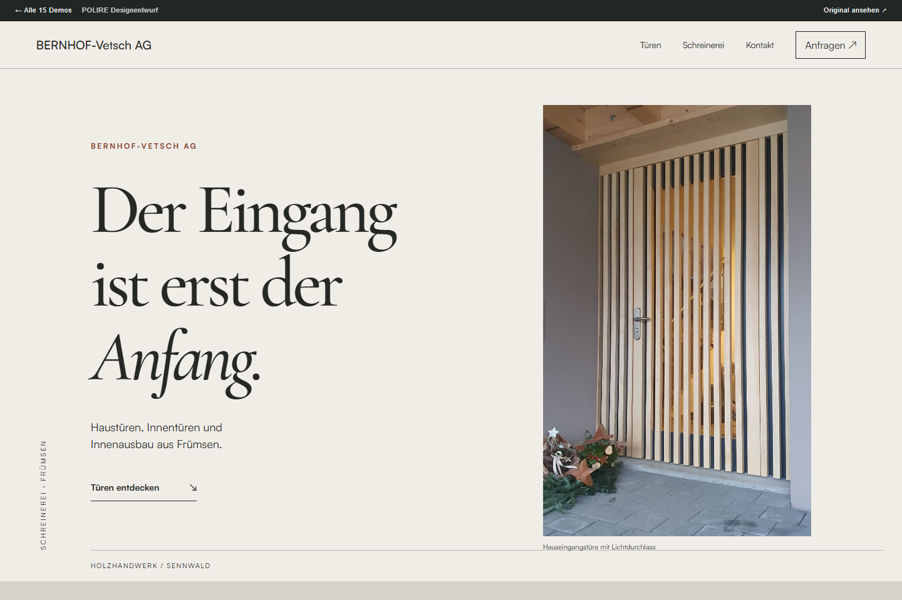
Frümsen SG · Holz & Schreinerei
Der Eingang als Architektur
Schmale Türporträts, präzise Abstände und ein architektonischer Aufbau.
Qualität der bisherigen Website53 von 100
Der Cookie-Dialog überdeckt beim beobachteten mobilen und Desktop-Aufruf grosse Teile des sichtbaren Startseiteninhalts.
Nächster Schritt: Betrieb, Bedarf und Interesse persönlich klären.
Review und Quellen
- Der Cookie-Dialog überdeckt beim beobachteten mobilen und Desktop-Aufruf grosse Teile des sichtbaren Startseiteninhalts.
- Die Startseite enthält eine umfangreiche Navigation mit wiederholten Menüpunkten sowie mehrere unterschiedliche Themenbereiche auf derselben Seite.
Die Webrecherche zeigte einen eigenen Sommerferien-Hinweis für 2026. Im späteren direkten Factory-Abruf war diese Datierung nicht mehr vorhanden. Das ist ein Recherchehinweis; aktuellen Betrieb und Erreichbarkeit zuerst telefonisch bestätigen.
Aktivitätsquelle öffnenTelefon: 081 757 12 73
Die Demo zeigt eine Gestaltungsrichtung. Inhalte und Bildrechte müssen vor einer Veröffentlichung mit der Firma abgestimmt werden.
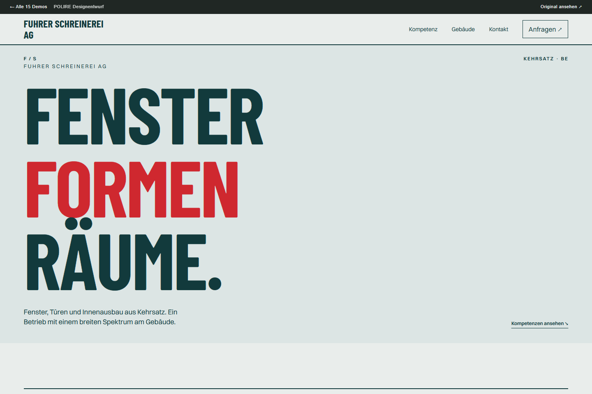
Kehrsatz BE · Holz & Schreinerei
Licht. Rahmen. Handwerk.
Eine technische Formensprache für Fenster, Türen und Innenausbau.
Qualität der bisherigen Website58 von 100
Der Cookie-Hinweis verdeckt auf der Startseite bei 375 × 812 einen grossen Teil des sichtbaren Inhalts.
Nächster Schritt: Betrieb, Bedarf und Interesse persönlich klären.
Review und Quellen
- Der Cookie-Hinweis verdeckt auf der Startseite bei 375 × 812 einen grossen Teil des sichtbaren Inhalts.
- Die Startseite enthält Inhalte mit Datumsbezug auf Oktober 2025 und 2022.
Eigene Website nennt die Sommerpause 2026 und seit Oktober 2025 ein erweitertes Arbeitsangebot.
Aktivitätsquelle öffnenTelefon: 031 961 35 55
Die Demo zeigt eine Gestaltungsrichtung. Inhalte und Bildrechte müssen vor einer Veröffentlichung mit der Firma abgestimmt werden.
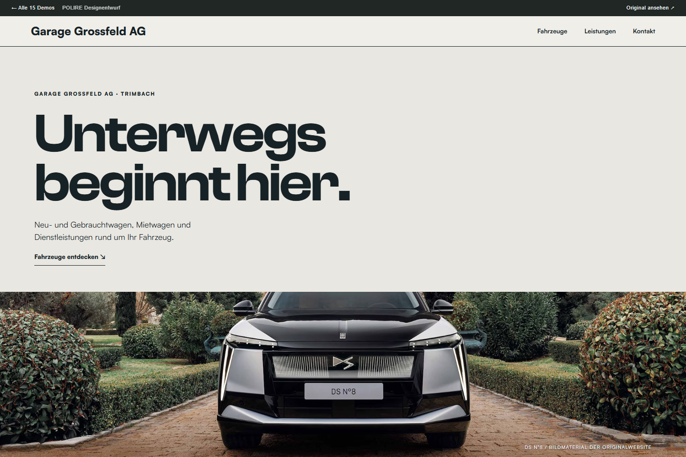
Trimbach SO · Garten & Handwerk
Automobilhaus in Bewegung
Grossformatige Fahrzeugbilder treffen auf übersichtliche Servicewege.
Qualität der bisherigen Website55 von 100
Im gelieferten Startseiteninhalt stehen «GARGAE GROSSFELD» und «CITROËN C5 AIRCORSS».
Nächster Schritt: Betrieb, Bedarf und Interesse persönlich klären.
Review und Quellen
- Im gelieferten Startseiteninhalt stehen «GARGAE GROSSFELD» und «CITROËN C5 AIRCORSS».
- Der Cookie-Hinweis enthält: «Wenn Sie jetzt einen Link anklicken, wegklicken oder das Impressum wählen, akzeptieren Sie automatisch die Cookies.»
- Lighthouse mobile performance: 53.
Eine eigene Personalnachricht nennt Ausbildungsstart im August 2026 und neuen Werkstattleiter ab September.
Aktivitätsquelle öffnenTelefon: 062 293 09 09
Die Demo zeigt eine Gestaltungsrichtung. Inhalte und Bildrechte müssen vor einer Veröffentlichung mit der Firma abgestimmt werden.
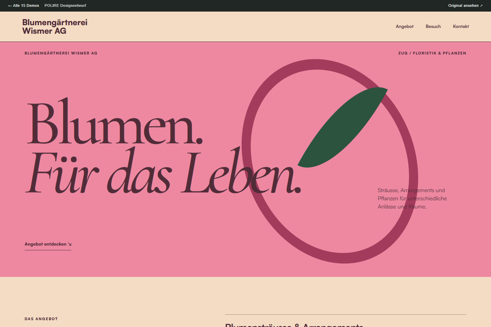
Zug ZG · Garten & Handwerk
Blumen als Typoplakat
Organische Formen und ausdrucksstarke Schrift, bewusst ohne fremde Fotos.
Qualität der bisherigen Website65 von 100
Im oberen Seitenbereich ist keine klar erkennbare Handlungsaufforderung sichtbar; Telefon und E-Mail stehen weiter unten auf der Seite.
Nächster Schritt: aktuellen Betrieb klären.
Betriebsstatus noch offen
Review und Quellen
- Im oberen Seitenbereich ist keine klar erkennbare Handlungsaufforderung sichtbar; Telefon und E-Mail stehen weiter unten auf der Seite.
Live-Seite zeigt Öffnungszeiten und Kontakte. Ein Suchindex erwähnte Sommerferien 2026; diese datierte Angabe war auf der direkt geöffneten Seite nicht mehr vorhanden. Betrieb vorerst nicht als aktuell bestätigt werten.
Aktivitätsquelle öffnenTelefon: 041 711 06 25
Die Demo zeigt eine Gestaltungsrichtung. Inhalte und Bildrechte müssen vor einer Veröffentlichung mit der Firma abgestimmt werden.
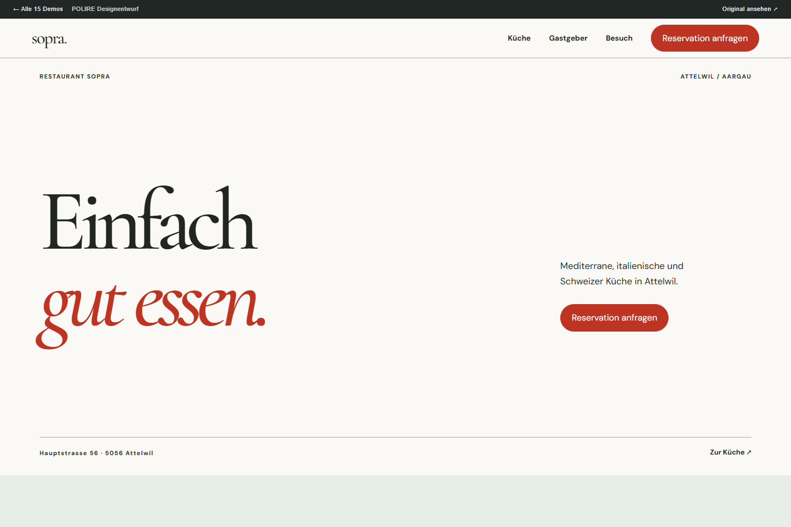
Attelwil AG · Salons & Restaurants
Die Speisekarte als Bühne
Eine typografische Restaurantseite mit mediterranem Charakter.
Qualität der bisherigen Website64 von 100
Auf der mobilen Startseite erscheint das Tagesmenü klein in einer schmalen mittigen Spalte; darum bleibt viel Leerraum.
Nächster Schritt: Betrieb, Bedarf und Interesse persönlich klären.
Review und Quellen
- Auf der mobilen Startseite erscheint das Tagesmenü klein in einer schmalen mittigen Spalte; darum bleibt viel Leerraum.
- Reservation ist in der Navigation sichtbar. Auf der beobachteten mobilen Startseite ist keine gleichwertig hervorgehobene Kontakt- oder Reservationsaktion sichtbar.
- Lighthouse mobile performance: 73
Die eigene Website enthält ein Mittagmenü vom 19. September 2026 und eine Online-Reservationsverknüpfung.
Aktivitätsquelle öffnenTelefon: 062 726 11 44
Die Demo zeigt eine Gestaltungsrichtung. Inhalte und Bildrechte müssen vor einer Veröffentlichung mit der Firma abgestimmt werden.
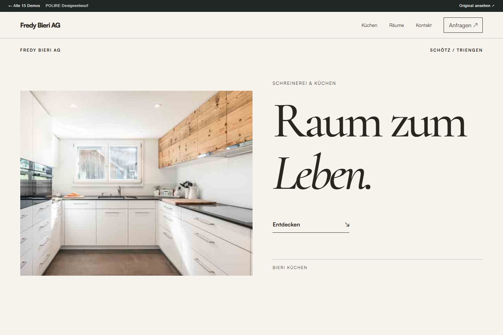
Schötz LU · Holz & Schreinerei
Räume zum Leben
Ein Wohnmagazin mit grosszügigen Bildflächen und ruhiger Typografie.
Qualität der bisherigen Website45 von 100
Bei 375 px sind Navigation, Links und Kontaktangaben sehr klein dargestellt; der Cookie-Hinweis verdeckt den oberen Bereich.
Nächster Schritt: Betrieb, Bedarf und Interesse persönlich klären.
Review und Quellen
- Bei 375 px sind Navigation, Links und Kontaktangaben sehr klein dargestellt; der Cookie-Hinweis verdeckt den oberen Bereich.
- Der Cookie-Hinweis liegt beim Aufruf über dem Kopfbereich und dem primären Seiteninhalt.
- Die Startseite bündelt zahlreiche Aktuell-Links, Standortangaben und Leistungsbilder; eine klar hervorgehobene nächste Handlung ist nicht beobachtet.
Eigene Nachrichten nennen Sommerferien, einen Tag der offenen Tür im Mai 2026 und Investitionen. Aktuelles Aktivitätssignal; heutige Erreichbarkeit nicht bestätigt.
Aktivitätsquelle öffnenTelefon: 041 980 13 81
Die Demo zeigt eine Gestaltungsrichtung. Inhalte und Bildrechte müssen vor einer Veröffentlichung mit der Firma abgestimmt werden.
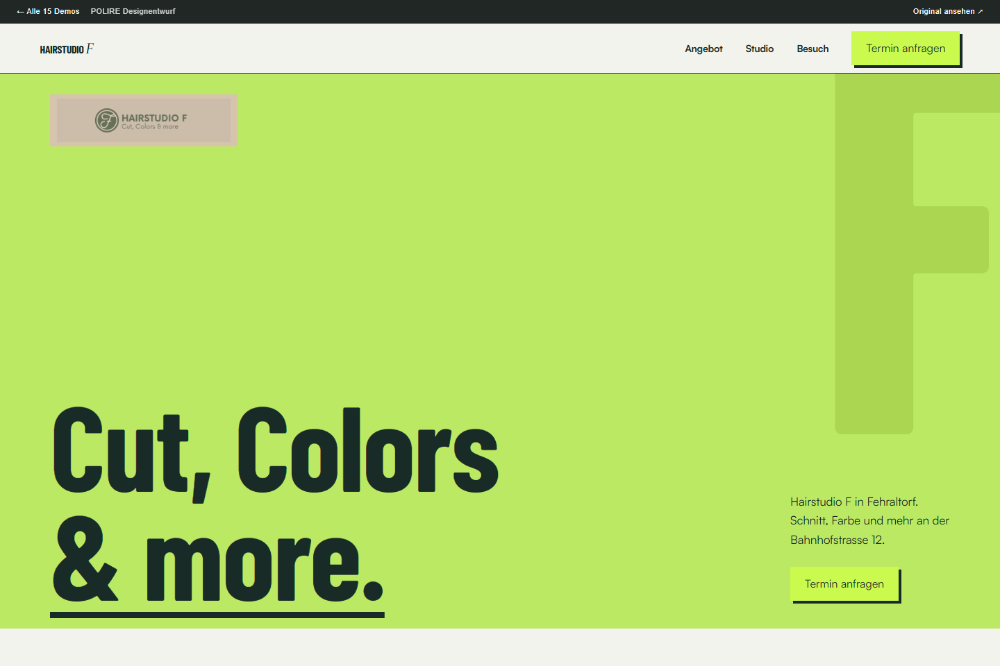
Fehraltorf ZH · Salons & Restaurants
Farbe mit Haltung
Ein grafischer Salonauftritt mit markanter Typografie und klaren Kontrasten.
Qualität der bisherigen Website40 von 100
Auf der mobilen Startseite trennen grosse Leerbereiche mehrere Inhaltsabschnitte; Öffnungszeiten und Adresse stehen erst am Ende der langen Seite.
Nächster Schritt: Betrieb, Bedarf und Interesse persönlich klären.
Ferienhinweis: 24. bis 26. September 2026
Review und Quellen
- Auf der mobilen Startseite trennen grosse Leerbereiche mehrere Inhaltsabschnitte; Öffnungszeiten und Adresse stehen erst am Ende der langen Seite.
- Der Ferienzeitraum Donnerstag 13.08.2026 bis Samstag 29.08.2026 erscheint auf der Startseite zweimal.
- Die Startseite nennt Terminvereinbarung sowie WhatsApp, E-Mail und Telefon im Fliesstext; eine hervorgehobene Kontaktaktion ist im mobilen Screenshot nicht sichtbar.
Eigene Ferienhinweise für August und September 2026. Am 24.-26. September abwesend. Für Anrufe die Festnetznummer verwenden; die Website bittet ausdrücklich um keine WhatsApp-Anrufe.
Aktivitätsquelle öffnenTelefon: 044 955 12 12
Die Demo zeigt eine Gestaltungsrichtung. Inhalte und Bildrechte müssen vor einer Veröffentlichung mit der Firma abgestimmt werden.
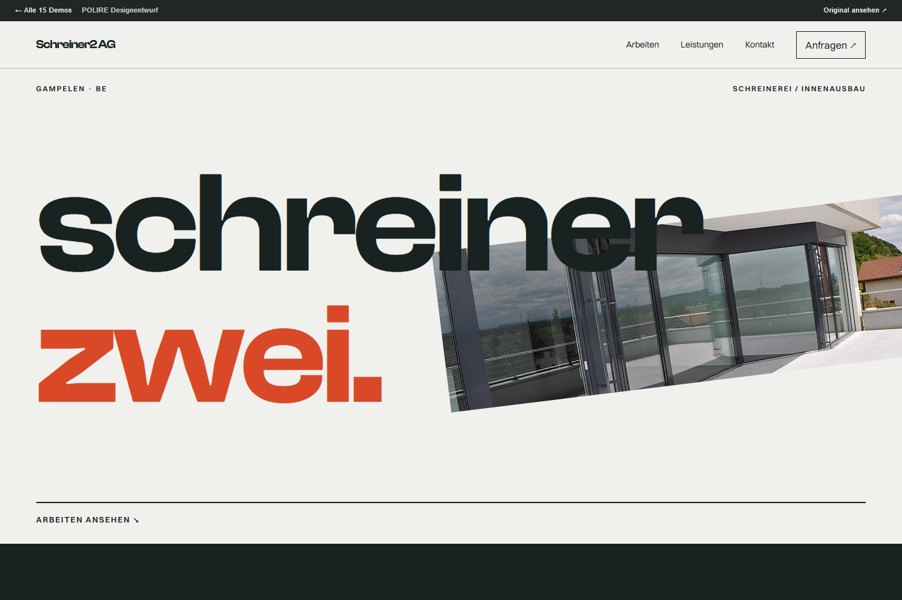
Gampelen BE · Holz & Schreinerei
Schweizer Werkstattportfolio
Grafische Schrift, klare Kontraste und eine eigenständige Bildmontage.
Qualität der bisherigen Website63 von 100
Auf der Startseite ist keine deutlich hervorgehobene Kontaktaufnahme im ersten sichtbaren Bereich beobachtet; die sichtbaren Schaltflächen verweisen auf Informationsbereiche.
Nächster Schritt: Betrieb, Bedarf und Interesse persönlich klären.
Review und Quellen
- Auf der Startseite ist keine deutlich hervorgehobene Kontaktaufnahme im ersten sichtbaren Bereich beobachtet; die sichtbaren Schaltflächen verweisen auf Informationsbereiche.
- Die Startseite nennt «Betriebsferien 2026/2027», während die Seite «Über Uns» «23.12.2024 - 06.01.2024» nennt.
- Für die Startseite liegt ein Lighthouse-mobile-Performancewert von 80 vor.
Eigene Website führt einen Ferienplan für 2026/2027 und Geschäftskontakte. Kein telefonischer Betriebsnachweis.
Aktivitätsquelle öffnenTelefon: 032 338 16 84
Die Demo zeigt eine Gestaltungsrichtung. Inhalte und Bildrechte müssen vor einer Veröffentlichung mit der Firma abgestimmt werden.
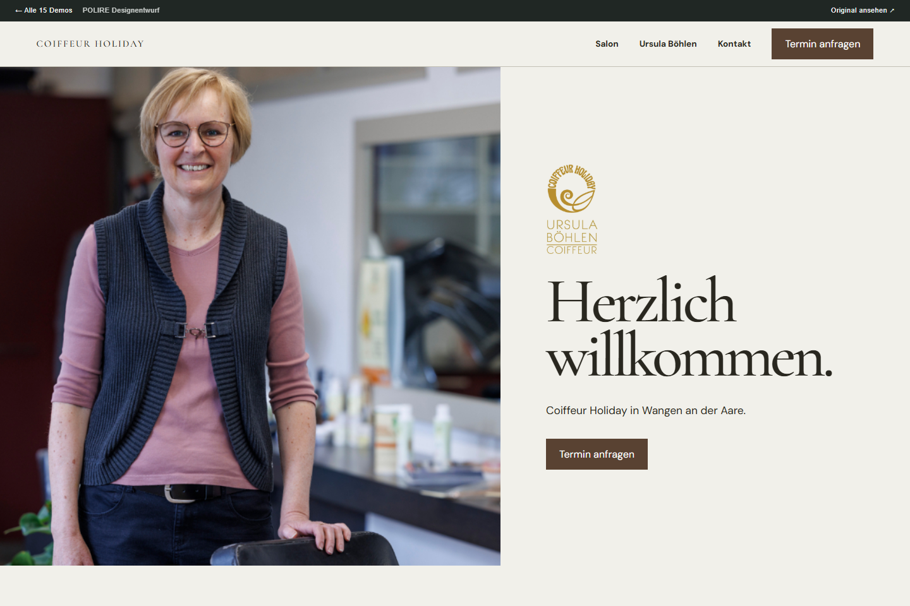
Wangen an der Aare BE · Salons & Restaurants
Ein Blick in den Salon
Vorhandene Salonbilder geben dem Auftritt Nähe und einen eigenen Rhythmus.
Qualität der bisherigen Website61 von 100
Dienstag bis Freitag: 8:30 - 12:00 / 13:30 - 18:00 auf der Startseite; Dienstag bis Freitag: 8:30 - 12:00 / 13:30 - 18:30 auf Kontakt und Impressum.
Nächster Schritt: Betrieb, Bedarf und Interesse persönlich klären.
Ferienhinweis: 24. September bis 12. Oktober 2026
Review und Quellen
- Dienstag bis Freitag: 8:30 - 12:00 / 13:30 - 18:00 auf der Startseite; Dienstag bis Freitag: 8:30 - 12:00 / 13:30 - 18:30 auf Kontakt und Impressum.
- Ursula Böhlen und Ursula Bösiger.
Die frische Factory-Aufnahme zeigt einen Ferienhinweis vom 24. September bis 12. Oktober 2026. Damit liegt ein aktuelles eigenes Aktivitätssignal vor; der zuvor geöffnete Webindex war veraltet. Vor dem Anruf die Pause berücksichtigen.
Aktivitätsquelle öffnenTelefon: 032 631 10 40
Die Demo zeigt eine Gestaltungsrichtung. Inhalte und Bildrechte müssen vor einer Veröffentlichung mit der Firma abgestimmt werden.
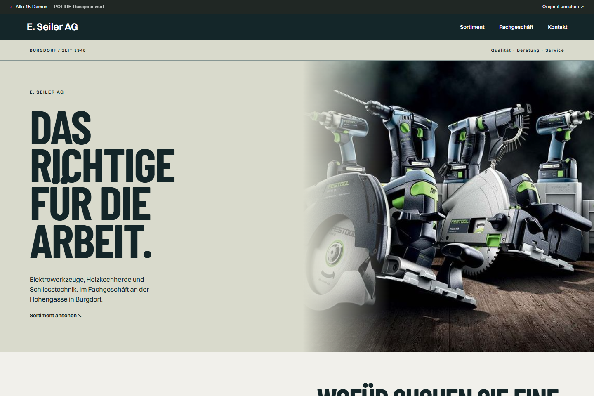
Burgdorf BE · Garten & Handwerk
Der Fachhandel als Katalog
Selbstbewusste Beschriftung und klare Orientierung im Sortiment.
Qualität der bisherigen Website65 von 100
Die Beschreibungen und Beschriftungen der Leistungskarten sind bei 375 px sehr klein dargestellt.
Nächster Schritt: Betrieb, Bedarf und Interesse persönlich klären.
Betriebsferien bis 5. Oktober 2026
Review und Quellen
- Die Beschreibungen und Beschriftungen der Leistungskarten sind bei 375 px sehr klein dargestellt.
- Auf der mobilen Startseite ist kein direkter Kontaktaufruf ausserhalb des Menüs sichtbar; Telefon und E-Mail stehen im Fliesstext und im Footer.
Eigene aktuelle Mitteilung: Betriebspause bis einschliesslich 5. Oktober; Wiederaufnahme ab 6. Oktober 2026. Kein Hinweis auf eine dauerhafte Schliessung. Anruf zurückstellen.
Aktivitätsquelle öffnenTelefon: 034 420 13 00
Die Demo zeigt eine Gestaltungsrichtung. Inhalte und Bildrechte müssen vor einer Veröffentlichung mit der Firma abgestimmt werden.
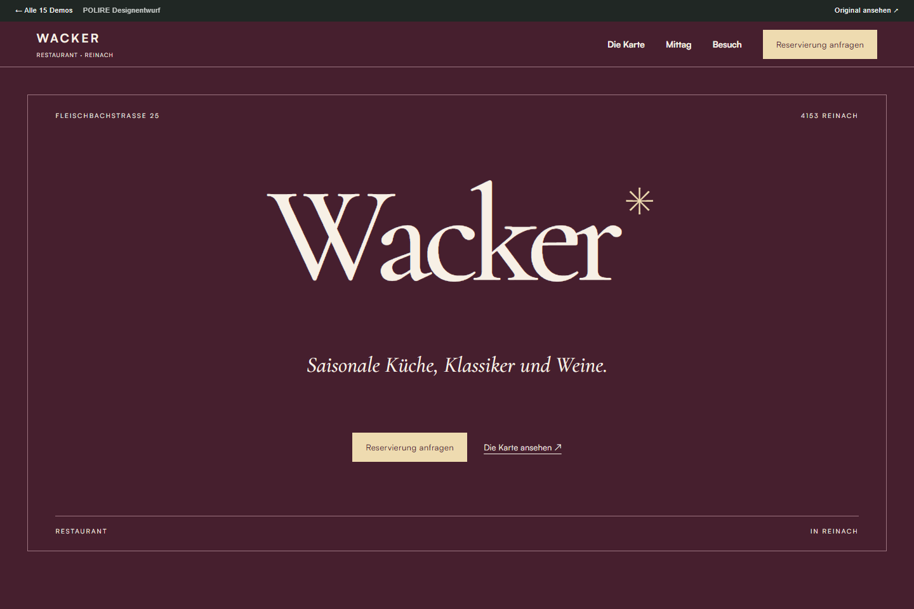
Reinach BL · Salons & Restaurants
Eine Einladung an den Tisch
Restaurantkultur in kräftigen Farben mit eigenständiger Menügestaltung.
Qualität der bisherigen Website71 von 100
Die Datenschutzseite zeigt «Überschrift 2» sowie einen bearbeitbaren Platzhaltertext.
Nächster Schritt: Betrieb, Bedarf und Interesse persönlich klären.
Betriebsferien bis 12. Oktober 2026
Review und Quellen
- Die Datenschutzseite zeigt «Überschrift 2» sowie einen bearbeitbaren Platzhaltertext.
- Im mobilen Startseiten-Screenshot erscheinen Fliesstexte und Navigationselemente sehr klein.
Suchindex zeigt Wochenmenü vom September 2026 und Betriebsferien 21. September bis 12. Oktober. Direkter Menüabruf lief in ein Zeitlimit; Pause vor Anruf nochmals prüfen.
Aktivitätsquelle öffnenTelefon: 061 711 53 20
Die Demo zeigt eine Gestaltungsrichtung. Inhalte und Bildrechte müssen vor einer Veröffentlichung mit der Firma abgestimmt werden.
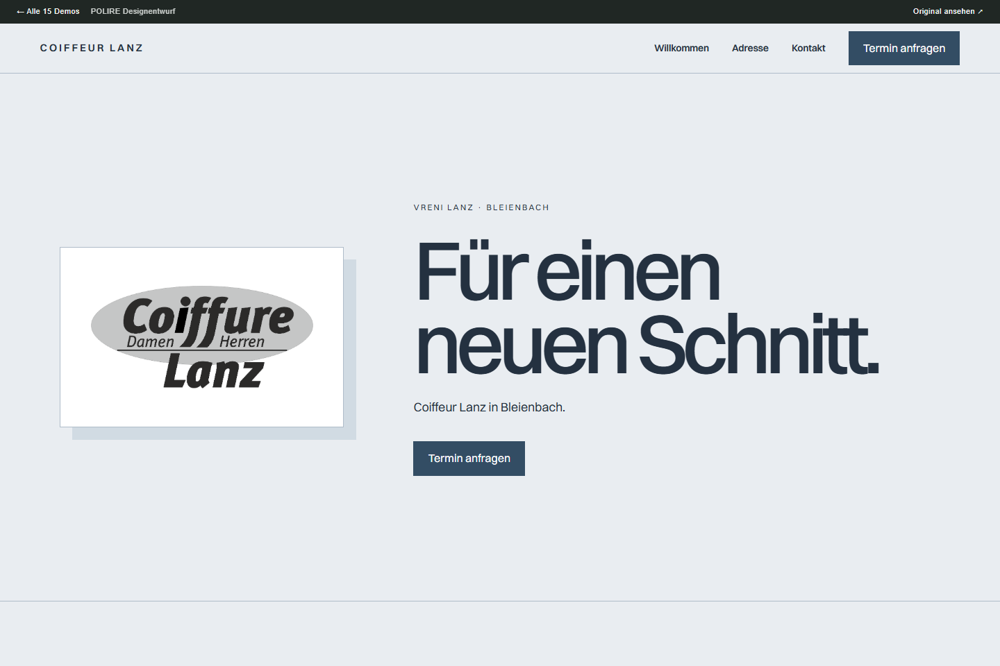
Bleienbach BE · Salons & Restaurants
Persönlich und nah
Ein ruhiger Salonauftritt mit präziser Schrift und direkter Kontaktführung.
Qualität der bisherigen Website28 von 100
Die Startseite wird bei 375 px Breite als breit fixierte Desktop-Anordnung dargestellt; Inhalt und Navigation liegen in einer deutlich breiteren Fläche.
Nächster Schritt: Betrieb, Bedarf und Interesse persönlich klären.
Review und Quellen
- Die Startseite wird bei 375 px Breite als breit fixierte Desktop-Anordnung dargestellt; Inhalt und Navigation liegen in einer deutlich breiteren Fläche.
- Auf der beobachteten Startseite sind Willkommen, Logo und Navigationslinks sichtbar, jedoch kein direkter Kontaktweg oder eine Handlungsaufforderung.
- Im beobachteten Startseiteninhalt fehlen konkrete Informationen zum Angebot; sichtbar sind Willkommen, Logo und Navigation.
Der Suchindex zeigte den datierten Ferienhinweis. Der direkte Öffnungszeiten-Abruf im Webwerkzeug zeigte eine Zugriffsprüfung; nicht umgangen. Telefonische Erreichbarkeit nicht getestet.
Aktivitätsquelle öffnenTelefon: 062 922 31 82
Die Demo zeigt eine Gestaltungsrichtung. Inhalte und Bildrechte müssen vor einer Veröffentlichung mit der Firma abgestimmt werden.
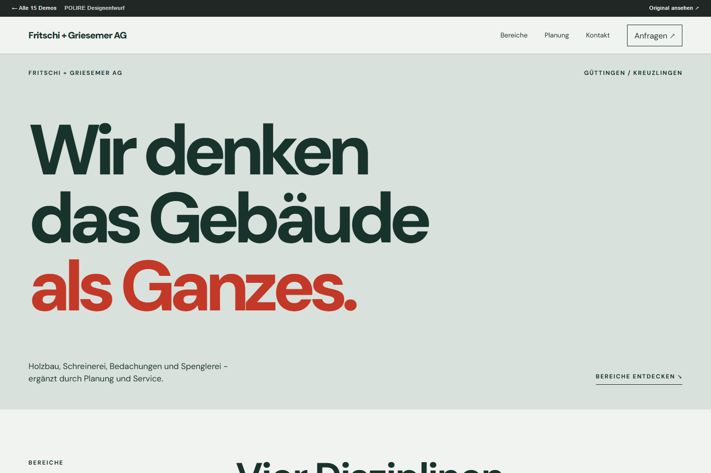
Güttingen / Kreuzlingen TG · Holz & Schreinerei
Vier Disziplinen, ein Auftritt
Eine geordnete Projekttafel macht die unterschiedlichen Gewerke greifbar.
Qualität der bisherigen Website57 von 100
Der Einleitungstext ist im mobilen Screenshot sehr klein dargestellt.
Nächster Schritt: Betrieb, Bedarf und Interesse persönlich klären.
Review und Quellen
- Der Einleitungstext ist im mobilen Screenshot sehr klein dargestellt.
- Die sichtbare Handlungsaufforderung im Einleitungsbereich lautet «Unsere Ansprechpersonen», während die Kontaktinformationen auf der Kontaktseite verfügbar sind.
Amtliche Mitteilung vom 12.05.2026 über Auftragsvergabe an der Gemeinderatssitzung vom 28.04.2026. Beleg für Geschäftstätigkeit, kein Nachweis eines Website-Budgets.
Aktivitätsquelle öffnenTelefon: 071 695 16 43
Die Demo zeigt eine Gestaltungsrichtung. Inhalte und Bildrechte müssen vor einer Veröffentlichung mit der Firma abgestimmt werden.
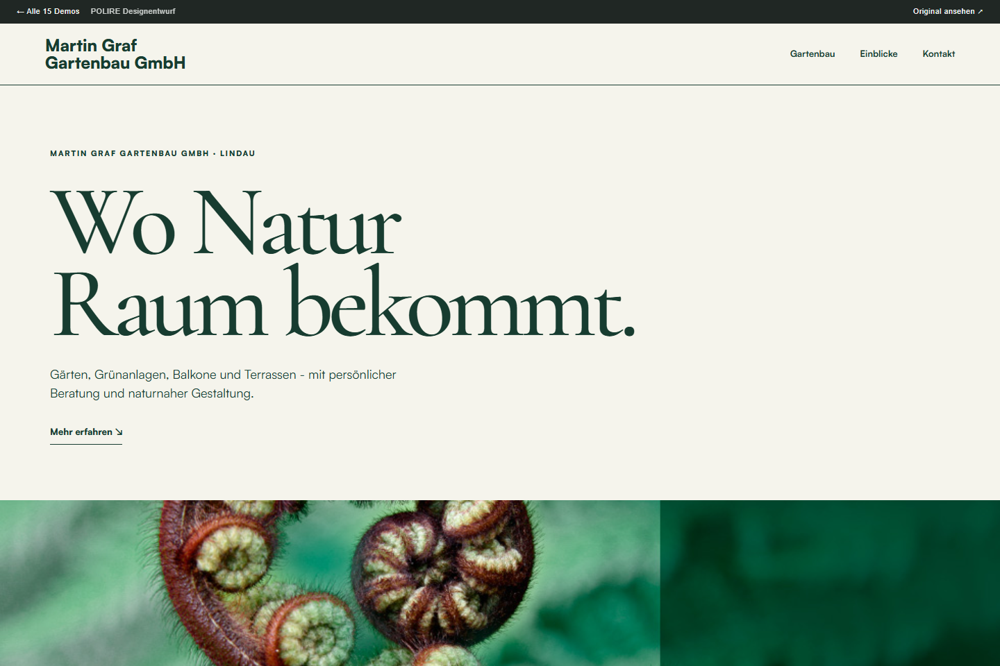
Lindau ZH · Garten & Handwerk
Natur im Seitenrhythmus
Botanische Nahaufnahmen, offene Flächen und eine ruhige Informationsfolge.
Qualität der bisherigen Website53 von 100
Die Ansicht bei 375 × 812 zeigt eine Desktop-Anordnung mit sehr kleinen Texten und nebeneinanderstehenden Inhaltsbereichen.
Nächster Schritt: aktuellen Betrieb klären.
Betriebsstatus noch offen
Review und Quellen
- Die Ansicht bei 375 × 812 zeigt eine Desktop-Anordnung mit sehr kleinen Texten und nebeneinanderstehenden Inhaltsbereichen.
Website und öffentliche Verzeichnisse stimmen bei Firma/Adresse/Telefon überein. Kein belastbarer datierter Betriebsnachweis gefunden. Aktiver Registereintrag allein reicht nicht.
Aktivitätsquelle öffnenTelefon: 052 345 12 50
Die Demo zeigt eine Gestaltungsrichtung. Inhalte und Bildrechte müssen vor einer Veröffentlichung mit der Firma abgestimmt werden.
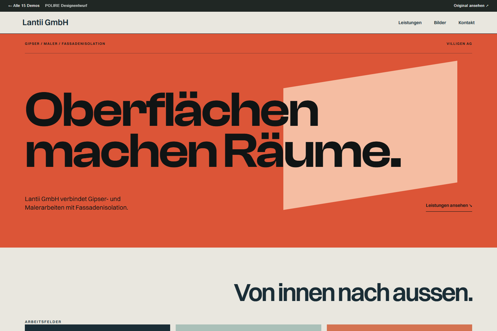
Villigen AG · Garten & Handwerk
Fläche, Farbe und Fassade
Architektonische Bildflächen und klare Farbkontraste für Gipser- und Malerarbeiten.
Qualität der bisherigen Website45 von 100
Die Navigation mit acht Einträgen ist bei 375 × 812 stark verdichtet.
Nächster Schritt: aktuellen Betrieb klären.
Betriebsstatus noch offen
Review und Quellen
- Die Navigation mit acht Einträgen ist bei 375 × 812 stark verdichtet.
- Die geprüfte Seite /about/ enthält nur Navigation und Footer; im Auszug ist keine Unternehmensinformation vorhanden.
Kontaktverzeichnis vorhanden, keine Öffnungszeiten eingetragen. Registeraggregatoren melden aktiv; das belegt keine laufende operative Tätigkeit. Kein belastbarer datierter Betriebsnachweis gefunden.
Aktivitätsquelle öffnenTelefon: 056 245 79 39
Die Demo zeigt eine Gestaltungsrichtung. Inhalte und Bildrechte müssen vor einer Veröffentlichung mit der Firma abgestimmt werden.